Fichas de lectura
Texto informativo en español con huecos y banco de palabras, comprensión auditiva con código QR (audio gratuito) y sopa de letras: 5 páginas con solucionario.
2.144 recursos
Materia
Grado

Fracción – Ficha de lectura: texto con huecos, comprensión auditiva y sopa de letras

Foro Económico Mundial – Ficha de lectura: texto con huecos, comprensión auditiva y sopa de letras

Flerovio – Ficha de lectura: texto con huecos, comprensión auditiva y sopa de letras

Fiyi – Ficha de lectura: texto con huecos, comprensión auditiva y sopa de letras

Finlandia – Ficha de lectura: texto con huecos, comprensión auditiva y sopa de letras

Faro – Ficha de lectura: texto con huecos, comprensión auditiva y sopa de letras

Exilio – Ficha de lectura: texto con huecos, comprensión auditiva y sopa de letras

Energía – Ficha de lectura: texto con huecos, comprensión auditiva y sopa de letras
Constitución – Ficha de lectura: texto con huecos, comprensión auditiva y sopa de letras
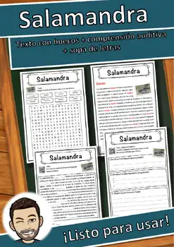
Salamandra – Ficha de lectura: texto con huecos, comprensión auditiva y sopa de letras
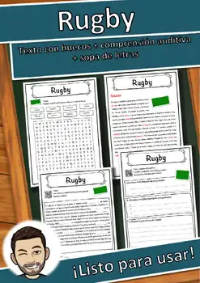
Rugby – Ficha de lectura: texto con huecos, comprensión auditiva y sopa de letras
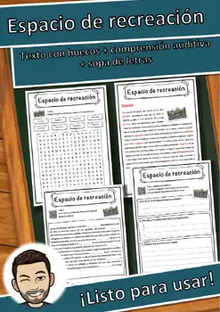
Espacio de recreación – Ficha de lectura: texto con huecos, comprensión auditiva y sopa de letras

Esch-sur-Alzette – Ficha de lectura: texto con huecos, comprensión auditiva y sopa de letras
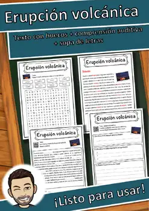
Erupción volcánica – Ficha de lectura: texto con huecos, comprensión auditiva y sopa de letras
Emys orbicularis – Ficha de lectura: texto con huecos, comprensión auditiva y sopa de letras

Emperador – Ficha de lectura: texto con huecos, comprensión auditiva y sopa de letras
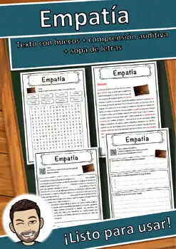
Empatía – Ficha de lectura: texto con huecos, comprensión auditiva y sopa de letras

Distritos de Alemania – Ficha de lectura: texto con huecos, comprensión auditiva y sopa de letras

Cracovia – Ficha de lectura: texto con huecos, comprensión auditiva y sopa de letras
Cobre – Ficha de lectura: texto con huecos, comprensión auditiva y sopa de letras
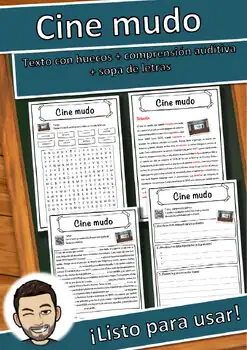
Cine mudo – Ficha de lectura: texto con huecos, comprensión auditiva y sopa de letras

Cartago – Ficha de lectura: texto con huecos, comprensión auditiva y sopa de letras

Cantón de Turgovia – Ficha de lectura: texto con huecos, comprensión auditiva y sopa de letras

Camboya – Ficha de lectura: texto con huecos, comprensión auditiva y sopa de letras
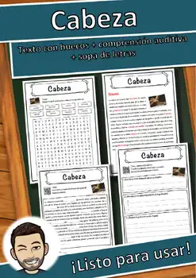
Cabeza – Ficha de lectura: texto con huecos, comprensión auditiva y sopa de letras
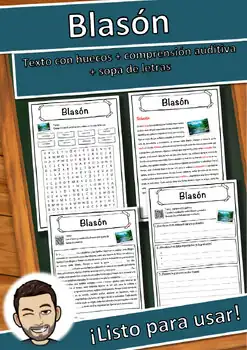
Blasón – Ficha de lectura: texto con huecos, comprensión auditiva y sopa de letras
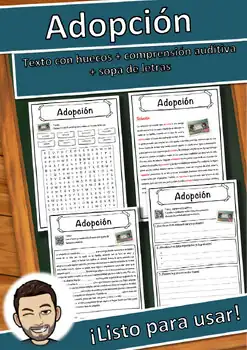
Adopción – Ficha de lectura: texto con huecos, comprensión auditiva y sopa de letras
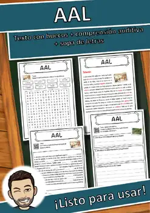
AAL – Ficha de lectura: texto con huecos, comprensión auditiva y sopa de letras
Sahel – Ficha de lectura: texto con huecos, comprensión auditiva y sopa de letras

Sacro Imperio Romano Germánico – Ficha de lectura: texto con huecos, comprensión auditiva y sopa de letras
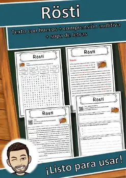
Rösti – Ficha de lectura: texto con huecos, comprensión auditiva y sopa de letras

Río de Janeiro – Ficha de lectura: texto con huecos, comprensión auditiva y sopa de letras

Río Mosela – Ficha de lectura: texto con huecos, comprensión auditiva y sopa de letras

Río Bravo – Ficha de lectura: texto con huecos, comprensión auditiva y sopa de letras
Rupicapra rupicapra – Ficha de lectura: texto con huecos, comprensión auditiva y sopa de letras
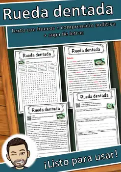
Rueda dentada – Ficha de lectura: texto con huecos, comprensión auditiva y sopa de letras

Ruanda – Ficha de lectura: texto con huecos, comprensión auditiva y sopa de letras

Edad Media – Ficha de lectura: texto con huecos, comprensión auditiva y sopa de letras
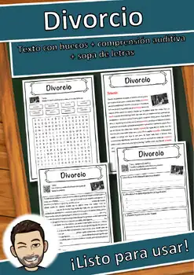
Divorcio – Ficha de lectura: texto con huecos, comprensión auditiva y sopa de letras

Baja Austria – Ficha de lectura: texto con huecos, comprensión auditiva y sopa de letras
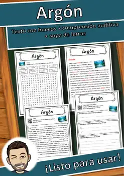
Argón – Ficha de lectura: texto con huecos, comprensión auditiva y sopa de letras
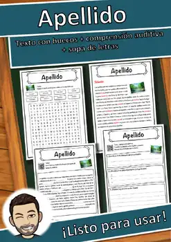
Apellido – Ficha de lectura: texto con huecos, comprensión auditiva y sopa de letras
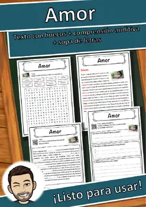
Amor – Ficha de lectura: texto con huecos, comprensión auditiva y sopa de letras
Alí Babá y los cuarenta ladrones – Ficha de lectura: texto con huecos, comprensión auditiva y sopa de letras

Alfred Escher – Ficha de lectura: texto con huecos, comprensión auditiva y sopa de letras
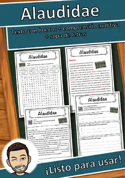
Alaudidae – Ficha de lectura: texto con huecos, comprensión auditiva y sopa de letras
Roy Lichtenstein – Ficha de lectura: texto con huecos, comprensión auditiva y sopa de letras

Rottweiler – Ficha de lectura: texto con huecos, comprensión auditiva y sopa de letras
No se encontraron recursos. Prueba con otra palabra o con otro filtro.